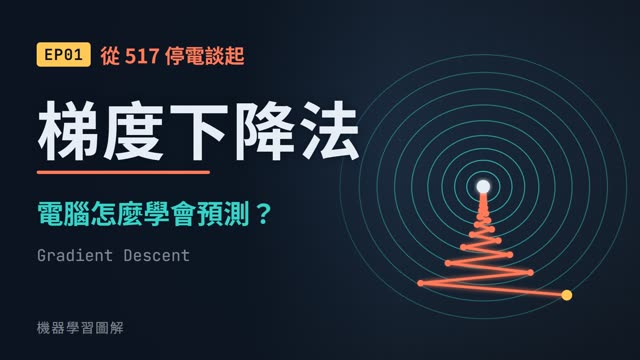

阮俊英Tuan Anh Nguyen
數位機電碩士生 · 工業物聯網與 PLC 相關工作 · 機器學習
M.S. student, Digital Mechatronics · Working on industrial IoT & PLC · Machine learning
關於我About
我是來自越南的阮俊英，就讀中國文化大學機械工程學系數位機電碩士班，預計 2028 年初畢業。目前在工作上接觸工業物聯網和 PLC。
我把自己學機器學習的過程做成 YouTube 頻道「ML 慢慢學」：每一集講清楚一個概念，用焚化爐當貫穿全系列的例子；影片裡的每一張資料圖和每一個數字，都由公開的 notebook 算出來，可以在 Google Colab 直接執行。
I'm Tuan Anh Nguyen from Vietnam, an M.S. student in Digital Mechatronics at Chinese Culture University in Taipei, expected to graduate in early 2028. In my job, I work with industrial IoT and PLCs. On my YouTube channel ML 慢慢學 I explain one machine-learning concept per episode in Traditional Chinese, using a waste incinerator as the running example. Every chart and number in each video is computed by a public notebook that runs on Google Colab.
語言：越南語（母語）、中文（TOCFL 進階級 B1）、English（B1）
Languages: Vietnamese (native), Chinese (TOCFL Level 3, B1), English (B1)
影片與程式Videos & notebooks
做過、會用的Skills
- Python 資料分析與視覺化（NumPy、matplotlib、Jupyter）Python for data analysis and plotting
- 機器學習基礎：迴歸、正則化、模型評估ML fundamentals: regression, regularization, evaluation
- YOLO 物件偵測：自己訓練、切分 train / valTrained YOLO object detectors
- PLC 與感測器訊號：類比訊號換算成工程單位PLC I/O and analog signal scaling
- 工業物聯網：讀取並整理電力與感測器資料Industrial IoT: reading power and sensor data
- 自動控制：P／PID 控制器Control: P / PID controllers